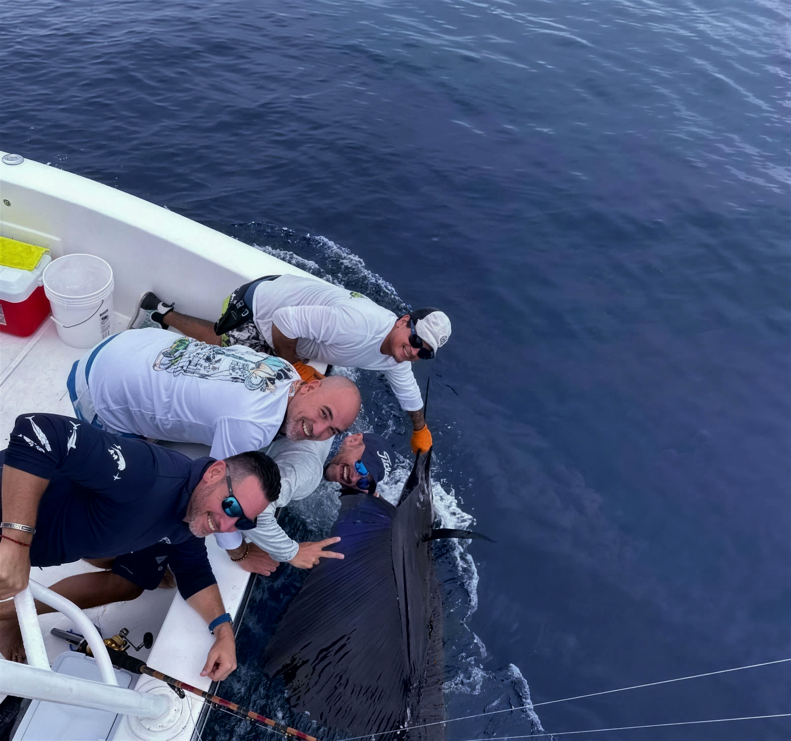

Full-day fishing charter
Offshore out of Herradura Bay, past the drop to sailfish water. The trip to book if a billfish is why you came.
The day
Lines off at seven. Fishing before nine.
You meet us at the marina in Herradura at six forty-five, and by seven you are aboard and the lines are off. A normal full day runs six to eight hours from there.
The run is twenty-two to twenty-eight miles, forty-five minutes to an hour. Then the bottom is simply gone underneath you, about a mile down, and the hunt starts: dredges and teasers to raise a sailfish, the tower reading the water for birds and bait, and a circle-hooked ballyhoo dropped in at the last second. That is bait-and-switch, the house method on this coast.
On the run home we often pitch the rocks and the beach for roosterfish. Meat fish come off cleaned and bagged at the dock. Billfish are released in the water, every time.
A good peak-season day is five to twenty sailfish released.
Green season, two to eight. Twenty is a day you will still be talking about in ten years. Those are honest charter numbers, not tournament numbers.
What you can catch
Seasons for this stretch of water
- Pacific sailfishDec–Apr peak · Jun–Aug second runThe reason this coast is famous, and the fish we plan the day around.
- Yellowfin tunaAug–Oct peak · from MayFound under the spinner dolphin. Sashimi at the dock.
- Mahi mahiNov–Dec run · green seasonColour, acrobatics, dinner.
- Blue marlinJul–Oct · offshore · a bonusThe real fishery is sixty miles further out. On a day trip, a blue is luck.
- WahooNo reliable seasonThe fastest strike in the spread. We won’t print a calendar we can’t defend.
What’s included
Aboard
- The whole boat and crew, your group only, nobody else aboard.
- Lunch, beer, water and fruit, aboard for the day.
- The fishing licence, paperwork goes through the boat; about $15 per angler, set by INCOPESCA.
- Berths, a galley sink and a private head, shade below deck when someone needs it.
- Your meat fish, cleaned and bagged at the dock, up to five per boat.
Bring
- Cash in dollars, for the crew on a good day.
- Seasickness medication, the night before and again that morning.
- Sun cover, hat, sunglasses, sunscreen.
Questions
Is the full day the sailfish trip?
Yes. The fish are forty-five minutes to an hour away, so the full day is the offshore trip. If sailfish are what you came for, this is the day to book.
How many people can come?
The price covers the whole boat for up to six guests. Each guest beyond six is $100.
Can we keep what we catch?
Tuna, dorado and wahoo, yes, cleaned and bagged at the dock. The limit is five fish per trip, per boat, not per angler. Sailfish and marlin are always released.
Can we bring kids?
Yes, and the cabin, berths and private head help. Six to eight hours offshore is a long day for young children, though, and the half day is often the better family trip.
Before you book
A 50% deposit holds your date.
The balance is settled the day of the trip.
Cancel more than 14 days out
and the deposit comes back to you.
Cancel inside 14 days
and the deposit is kept. The date was held for you.
Rain or shine, the boat runs.
Only weather that closes the port calls off a day.
Put a date on the water.
Tell us your dates and your group. Answers come fast, from the same thread.
Other days on the boat: